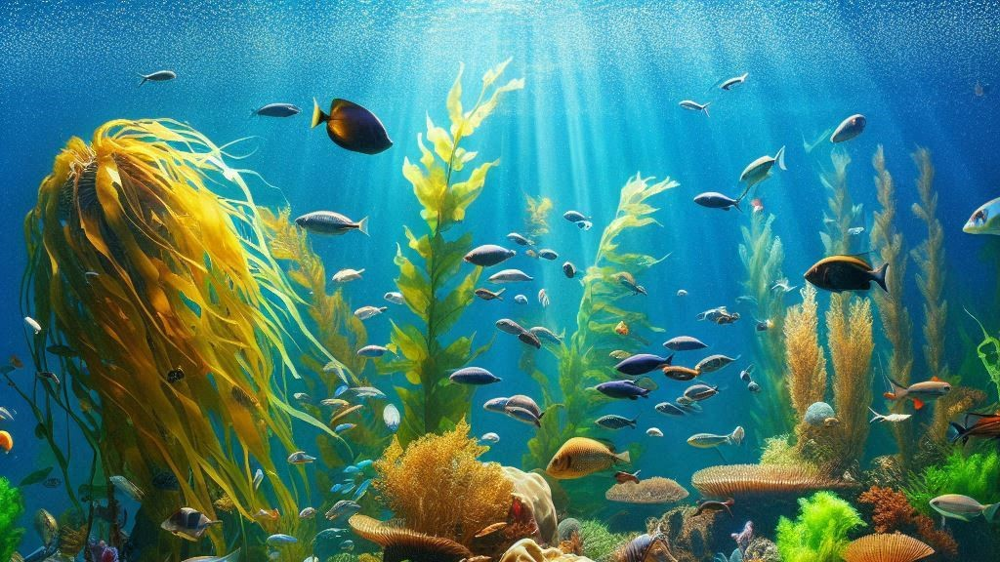

What are Marine Ecosystems ?
Marine ecosystems are vast ever-changing worlds full of life, mystery, and breathtaking beauty. They
include the deep shadowy trenches in the ocean where monsters roam, brilliant color-laden coral reefs,
and the sunlit coastal waters that embrace life at the interface of land and sea. Unlike freshwater
ecosystems, mortal marine inky climate is influenced by powerful tides, changing currents, and the
sea's salt-laden embrace, forming an environment for an extraordinary array of organisms.
These ecosystems act as life-support systems for the planet—not only because they are important
habitats for marine life, but also because they regulate the climate of Earth, provide oxygen, and
absorb carbon dioxide. From the barely seen microscopic plankton building in the currents to the
majestic whales gliding through the depths, marine ecosystems form the basis for a delicate woven
web of life that sustains not only other life beneath the waves but also those that live well away
from the shores.

Types of Marine Ecosystems
The marine world is incredibly diverse, home to a variety of ecosystems, each filled with unique life
forms and playing a crucial role in the ocean’s delicate balance.
üê≥Oceans ‚Äì The Endless Blue
The vast, open ocean stretches across the globe, like an unbroken sapphire sheet, covering more than
70% of the surface of Earth,This ocean is divided into a number of layers, each standing for entirely
separate worlds.While sailing on the surface of the ocean are a shoal of fish, the playful dolphins,
and birds, down in the mysterious and dark waters hide such oddities as luminescent anglerfish and
giant squid.
ü™∏Coral Reefs ‚Äì The Underwater Cities
Coral reefs, often called the "rainforests of the sea," are remarkable and complex constructions
created by minute coral polyps and something that was gleaming for centuries. In this bright ecosystem,
sea turtles swim in beauty among the amazing structures of coral, clownfish dash among the anemones,
and reef sharks patrol the water, keeping the delicate balance of life.
üåäEstuaries ‚Äì The Cradle of the Sea
Wherever in this world, the places where freshwater rivers meet the salty embrace of the ocean are the
estuaries,nurturing habitats .Here brackish waters are bustling nurseries where young fish, shrimp,
and crabs find shelter before venturing into the ocean .The mix of salt- and freshwater creates a
nutrient-rich environment, thus making estuaries one of the most productive ecosystems on Earth.
üå±Mangrove Forests ‚Äì Guardians of the Shore
With their twisted roots emerging from the water like old guardians, mangrove forests grow along
tropical coastlines, protecting the land from erosion and storms. These trees tolerate salt, forming
dense, tangled forests that hide young marine life, from small fishes to wading birds, and endangered
species such as sea turtles and manatees.
ü™ºDeep-Sea Ecosystems ‚Äì The Twilight Abyss
Out of reach of sunlight, where pressure alone could crush a human in an instant, the deep-sea world is
mixed up in so many mysteries. Ghostly gulper eels and bioluminescent jellyfish float through the black,
while great tube worms cluster around hydrothermal vents, drawing energy not from the sun, but from the
fiery core of the Earth.
Each of these ecosystems is a world within a world, filled with life, struggle, and survival, all
connected in a delicate balance that keeps the ocean alive.

Importance of Marine Ecosystems
Marine ecosystems are more than just breathtaking landscapes beneath the waves, they are the very
heartbeat of our planet. Their importance is woven into every aspect of life on Earth:
üåèThe Planet's Breath
Marine ecosystems produce over 50% of the oxygen we breathe. These microscopic life forms, tiny and
invisible, float on the ocean's surface, and they use sunlight and carbon dioxide to produce oxygen
that fills the air. Without phytoplankton, life as we know it would not exist, given the tiny size of
these life forms.
❄️A Climate Regulator
The ocean works like the air conditioner for the Earth—it absorbs immense amounts of heat and CO2 to
help keep the Earth's temperature in check. Yet as climate change speeds up, the complexities of the
system are now at risk. This is leading to sea-level rise, stronger storms, and dislocations of marine
life.
üçΩÔ∏èA Source of Life and Livelihood
For billions, the sea creates a link to food, a sustenance of jobs, and economic viability. From the
fish markets of coastal towns to deep-sea fisheries supplying the world, marine ecosystems form the
backbone of global food security. These marine-derived compounds are being researched as possible
life-saving medicines, including cancer treatments and antibiotics.
üèùÔ∏èNature‚Äôs Shield
Coastal ecosystems that serve as natural barriers, such as seagrass meadows, mangroves, and coral reefs,
shield shorelines from erosion, tsunamis, and storm surges. Coastal settlements would be far more
susceptible to the forces without them of the natural world.
Despite their immense importance, marine ecosystems face growing threats from overfishing, pollution,
and clmate change. Their health is our health, making conservation efforts more urgent than ever.

Marine Food Chains and Webs
Beneath the rolling waves, an intricate dance of life and survival plays out in the form of marine food
chains and webs.
üîÜThe Sunlit Foundation ‚Äì Producers
At the base of the marine food chain are the producers, microscopic phytoplankton that float freely in
the water, absorbing sunlight and using photosynthesis to create energy. These tiny plants are the
primary source of food for countless marine creatures and serve as the backbone of the ocean’s
ecosystem.
ü¶êThe Grazers ‚Äì Primary Consumers
Zooplankton are tiny, floating organisms that consume phytoplankton and transform its energy into a
form that larger species can use. This level also includes tiny fish, shrimp, and krill, which serve
as an essential conduit between the larger predators and the microscopic world.
ü¶ëThe Predators ‚Äì Secondary Consumers
Fish that swim quickly, such as mackerel, squid, and jellyfish, maintain the balance of populations
by feeding on smaller animals. They serve as a link between the top hunters in the ocean and the
small grazers.
ü¶àThe Ocean‚Äôs Apex Predators
Top of the food webs are sharks, orcas, and gigantic squids, and these animals are said to be the most
excellent in the kingdom. These top predators control the marine population so that one single species
does not dominate it and cause an imbalance in the ecosystem.
üåêThe Web of Life
Marine ecosystems differ from simple food chains; they consist of complex food webs, where different
species interact with one another in a complicated manner. In a life cycle, a fish is often abused by
different predators. A single species can eventually trigger the decline of the whole ecosystem after
being over-fished or destroyed habitat-wise.
This fragile balance is what keeps the ocean alive, making every creature — from the tiniest plankton to
the largest whale — an essential part of this vast, interconnected world.